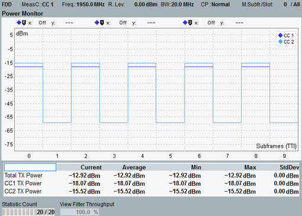

The power monitor view displays the power in the captured subframes. With carrier aggregation, the component carriers are measured separately. One curve per carrier is displayed.

Each subframe power value is RMS averaged over the entire subframe, excluding 20 μs at each subframe border.
The number of subframes to be captured and shown on the X-axis is configurable. The offset of subframe 0 relative to the trigger event is also configurable. For settings, see "Measurement Subframe".
The table provides a statistical evaluation of the power in the configured "Measure Subframe". It lists the TX power per component carrier and the sum of all component carriers ("Total TX Power").
The power monitor can be used for power control tests, especially for aggregate power control tests (see 3GPP TS 36.521, 6.3.5 "Power Control").
For the parameters at the bottom, see "Common View Elements".
For query of the power monitor results via remote control, see "Power Monitor Results".